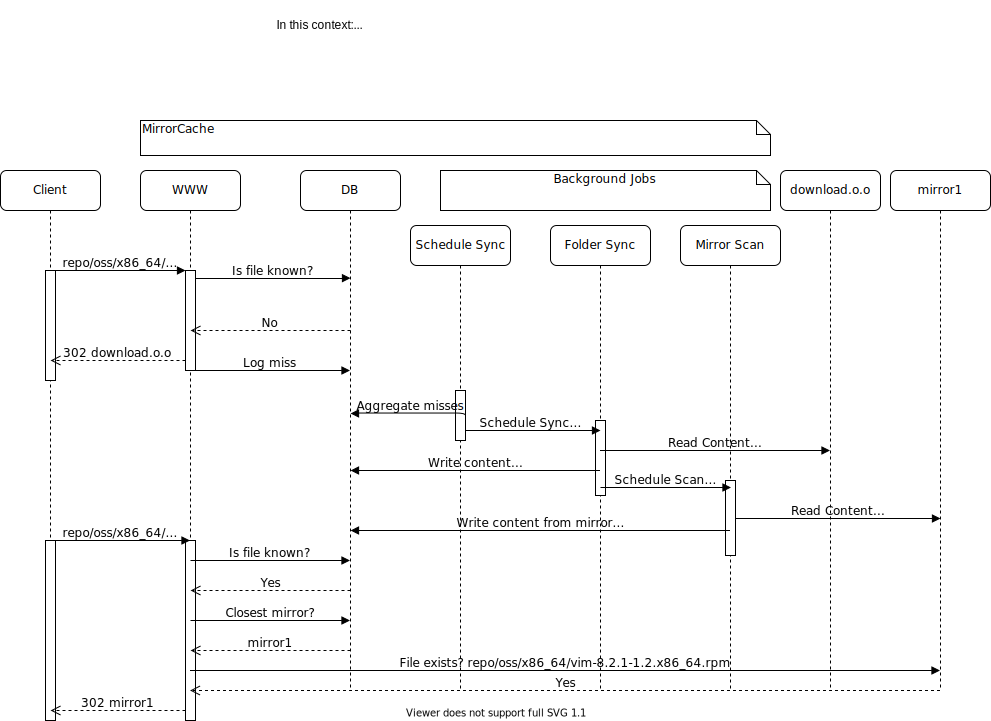

What is MirrorCache?
MirrorCache is a Web Server for files download, which will route download requests to an appropriate mirror. MirrorCache doesn’t store files and instead keeps in DB list of files from the Main Server.
According to Wikipedia "Cache - is a component that stores data so that future requests for that data can be served faster". In this regard MirrorCache is a cache of (meta)information about geographical location of files.
"Cache hit" means that MirrorCache was able to redirect to proper (the closest) mirror. "Cache miss" means that MirrorCache had to redirect request to the Main Server.
Overview and Concept
Here is the perfect place to provide a nice picture of the process...
FAQ
- The MirrorCache wiki has some documentation about the installation.
- The GitHub Repository contains some special documentation files.